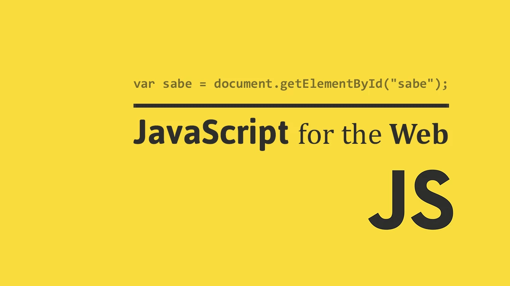

JavaScript는 웹 페이지를 대화식(예: 복잡한 애니메이션, 클릭 가능한 버튼, 팝업 메뉴 등)으로 만드는 데 사용되는 크로스 플랫폼, 객체 지향 스크립팅 언어입니다. 또한 Node.js와 같이 파일을 다운로드하는 것보다 더 많은 기능(예: 여러 컴퓨터 간의 실시간 공동 작업)을 웹 사이트에 추가할 수 있는 JavaScript의 고급 서버 측 버전도 있습니다. 호스트 환경(예: 웹 브라우저) 내에서 JavaScript를 해당 환경의 객체에 연결하여 프로그래밍 방식으로 제어할 수 있습니다.
JavaScript는 Array, Date, 그리고 Math와 같은 객체에 대한 표준 라이브러리와 연산자, 제어 구조, 그리고 명령문과 같은 언어 요소의 집합이 있습니다. 코어 JavaScript는 추가 객체로 보완하여 다양한 목적으로 확장할 수 있습니다. 예를 들어 다음과 같습니다.
클라이언트 측 JavaScript는 브라우저와 문서 객체 모델(DOM)을 제어하는 객체를 제공하여 코어 언어를 확장합니다. 예를 들어, 클라이언트 측 확장을 사용하면 애플리케이션이 HTML 양식에 요소를 배치하고 마우스 클릭, 양식 입력, 그리고 페이지 탐색과 같은 사용자 이벤트에 응답할 수 있습니다.
서버 측 JavaScript는 서버에서 JavaScript를 실행하는 것과 관련된 객체를 제공하여 핵심 언어를 확장합니다. 예를 들어, 서버측 확장을 사용하면 애플리케이션이 데이터베이스와 통신하고, 애플리케이션의 한 호출에서 다른 애플리케이션으로 연속적인 정보를 제공하거나, 서버에서 파일을 조작할 수 있습니다.
이것은 브라우저에서 JavaScript가 웹 페이지 (DOM)의 모양을 바꿀 수 있음을 의미합니다. 또한 서버의 Node.js JavaScript는 브라우저에 작성된 코드의 사용자 정의 요청에 응답 할 수 있습니다.
